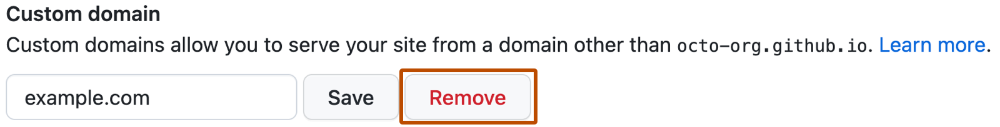

Managing a custom domain for your GitHub Pages site
You can set up or update certain DNS records and your repository settings to point the default domain for your GitHub Pages site to a custom domain.
People with admin permissions for a repository can configure a custom domain for a GitHub Pages site.
About custom domain configuration
Tip
We recommend verifying your custom domain prior to adding it to your repository, in order to improve security and avoid takeover attacks. For more information, see Verifying your custom domain for GitHub Pages.
Make sure you add your custom domain to your GitHub Pages site before configuring your custom domain with your DNS provider. Configuring your custom domain with your DNS provider without adding your custom domain to GitHub could result in someone else being able to host a site on one of your subdomains.
The dig command, which can be used to verify correct configuration of DNS records, is not included in Windows. To verify that your DNS records are configured correctly, you can use the Resolve-DnsName PowerShell command or install BIND.
Note
DNS changes can take up to 24 hours to propagate.
Configuring an apex domain
To set up an apex domain, such as example.com, you must configure a custom domain in your repository settings and at least one ALIAS, ANAME, or A record with your DNS provider.
On GitHub, navigate to your site's repository.
Under your repository name, click Settings. If you cannot see the "Settings" tab, select the dropdown menu, then click Settings.
In the "Code and automation" section of the sidebar, click Pages.
Under "Custom domain", type your custom domain, then click Save. If you are publishing your site from a branch, this will create a commit that adds a CNAME file directly to the root of your source branch. If you are publishing from a custom GitHub Actions workflow, no CNAME file is created, and any existing CNAME file is ignored and is not required. For more information about your publishing source, see Configuring a publishing source for your GitHub Pages site.
Navigate to your DNS provider and create either an ALIAS, ANAME, or A record. You can also create AAAA records for IPv6 support. If you're implementing IPv6 support, we highly recommend using an A record in addition to your AAAA record, due to slow adoption of IPv6 globally. For more information about how to create the correct record, see your DNS provider's documentation.
To create an ALIAS or ANAME record, point your apex domain to the default domain for your site. For more information about the default domain for your site, see What is GitHub Pages?.
To create A records, point your apex domain to the IP addresses for GitHub Pages.
If your DNS provider automatically sets a default record, remove it before continuing.
Warning
We strongly recommend that you do not use wildcard DNS records, such as *.example.com. These records put you at an immediate risk of domain takeovers, even if you verify the domain. For example, if you verify example.com this prevents someone from using a.example.com but they could still take over b.a.example.com (which is covered by the wildcard DNS record).
Open TerminalTerminalGit Bash.
To confirm that your DNS record configured correctly, use the dig command, replacing EXAMPLE.COM with your apex domain. Confirm that the results match the IP addresses for GitHub Pages above.
For A records:
$ dig EXAMPLE.COM +noall +answer -t A
> EXAMPLE.COM 3600 IN A 185.199.108.153
> EXAMPLE.COM 3600 IN A 185.199.109.153
> EXAMPLE.COM 3600 IN A 185.199.110.153
> EXAMPLE.COM 3600 IN A 185.199.111.153
For AAAA records:
$ dig EXAMPLE.COM +noall +answer -t AAAA
> EXAMPLE.COM 3600 IN AAAA 2606:50c0:8000::153
> EXAMPLE.COM 3600 IN AAAA 2606:50c0:8001::153
> EXAMPLE.COM 3600 IN AAAA 2606:50c0:8002::153
> EXAMPLE.COM 3600 IN AAAA 2606:50c0:8003::153
If you use a static site generator to build your site locally and push the generated files to GitHub, pull the commit that added the CNAME file to your local repository. For more information, see Troubleshooting custom domains and GitHub Pages.
Optionally, to enforce HTTPS encryption for your site, select Enforce HTTPS. It can take up to 24 hours before this option is available. For more information, see Securing your GitHub Pages site with HTTPS.
Configuring an apex domain and the www subdomain variant
Note
Setting up a www subdomain alongside an apex domain is recommended for HTTPS secured websites.
If you are using an apex domain as your custom domain, we recommend also setting up a www subdomain. If you configure the correct records for each domain type through your DNS provider, GitHub Pages will automatically create redirects between the domains. For example, if you configure www.example.com as the custom domain for your site, and you have GitHub Pages DNS records set up for the apex and www domains, then example.com will redirect to www.example.com. If you instead configure example.com as the custom domain, then www.example.com will redirect to example.com. Automatic redirects also apply to other subdomains, as www.blog.example.com will redirect to blog.example.com or vice versa. It is not possible to configure a domain that starts with www.www.. For more information, see Configuring a subdomain.
Navigate to your DNS provider and create a CNAME record for the www subdomain that points to your GitHub Pages default domain. For example, if your site is located at <user>.github.io, you should create a CNAME record that points www.example.com to <user>.github.io Similarly, for an organization site located at <organization>.github.io, you should create a CNAME record that points www.example.com to <organization>.github.io. Ensure that the CNAME record points directly to <user>.github.io or <organization>.github.io without including the repository name.
For more information about how to create the correct record, see your DNS provider's documentation. For more information about the default domain for your site, see What is GitHub Pages?.
Configuring a subdomain
To set up a www or custom subdomain, such as www.example.com or blog.example.com, you must add your domain in the repository settings. After that, configure a CNAME record with your DNS provider.
On GitHub, navigate to your site's repository.
Under your repository name, click Settings. If you cannot see the "Settings" tab, select the dropdown menu, then click Settings.
In the "Code and automation" section of the sidebar, click Pages.
Under "Custom domain", type your custom domain, then click Save. If you are publishing your site from a branch, this will create a commit that adds a CNAME file directly to the root of your source branch. If you are publishing from a custom GitHub Actions workflow, no CNAME file is created, and any existing CNAME file is ignored and is not required. For more information about your publishing source, see Configuring a publishing source for your GitHub Pages site.
Note
If your custom domain is an internationalized domain name, you must enter the Punycode encoded version.
Navigate to your DNS provider and create a CNAME record that points your subdomain to the default domain for your site. For example, if you want to use the subdomain www.example.com for your user site, create a CNAME record that points www.example.com to <user>.github.io. If you want to use the subdomain another.example.com for your organization site, create a CNAME record that points another.example.com to <organization>.github.io. The CNAME record should always point to <user>.github.io or <organization>.github.io, excluding the repository name. For more information about how to create the correct record, see your DNS provider's documentation. For more information about the default domain for your site, see What is GitHub Pages?.
Warning
We strongly recommend that you do not use wildcard DNS records, such as *.example.com. These records put you at an immediate risk of domain takeovers, even if you verify the domain. For example, if you verify example.com this prevents someone from using a.example.com but they could still take over b.a.example.com (which is covered by the wildcard DNS record).
Open TerminalTerminalGit Bash.
To confirm that your DNS record configured correctly, use the dig command, replacing WWW.EXAMPLE.COM with your subdomain.
$ dig WWW.EXAMPLE.COM +nostats +nocomments +nocmd
> ;WWW.EXAMPLE.COM. IN A
> WWW.EXAMPLE.COM. 3592 IN CNAME YOUR-USERNAME.github.io.
> YOUR-USERNAME.github.io. 43192 IN CNAME GITHUB-PAGES-SERVER .
> GITHUB-PAGES-SERVER . 22 IN A 192.0.2.1
If you use a static site generator to build your site locally and push the generated files to GitHub, pull the commit that added the CNAME file to your local repository. For more information, see Troubleshooting custom domains and GitHub Pages.
Optionally, to enforce HTTPS encryption for your site, select Enforce HTTPS. It can take up to 24 hours before this option is available. For more information, see Securing your GitHub Pages site with HTTPS.
Note
If you point your custom subdomain to your apex domain, you will encounter issues with enforcing HTTPS to your website, and you may encounter issues where your subdomain does not reach your GitHub Pages site at all.
DNS records for your custom domain
If you are familiar with the process of configuring your domain for a GitHub Pages site, you can use the table below to find the DNS values for your specific scenario and the DNS record types that your DNS provider supports. For more information, including how to configure your GitHub Pages site on GitHub and how to verify the configuration using the dig command, refer to the sections above.
To configure an apex domain, add all of the A and AAAA records from the table below, or alternatively add only the ALIAS/ANAME record from the table. To configure an apex domain and www subdomain (for example, example.com and www.example.com), configure the apex domain and then the subdomain. For more information, see Configuring an apex domain and the www subdomain variant.
Warning
We strongly recommend that you do not use wildcard DNS records, such as *.example.com. These records put you at an immediate risk of domain takeovers, even if you verify the domain. For example, if you verify example.com this prevents someone from using a.example.com but they could still take over b.a.example.com (which is covered by the wildcard DNS record).
If you get an error about a custom domain being taken, you may need to remove the custom domain from another repository.
On GitHub, navigate to your site's repository.
Under your repository name, click Settings. If you cannot see the "Settings" tab, select the dropdown menu, then click Settings.
In the "Code and automation" section of the sidebar, click Pages.
Under "Custom domain," click Remove.

Securing your custom domain
If your GitHub Pages site is disabled but has a custom domain set up, it is at risk of a domain takeover. Having a custom domain configured with your DNS provider while your site is disabled could result in someone else hosting a site on one of your subdomains.
Verifying your custom domain prevents other GitHub users from using your domain with their repositories. If your domain is not verified, and your GitHub Pages site is disabled, you should immediately update or remove your DNS records with your DNS provider. For more information, see Verifying your custom domain for GitHub Pages.